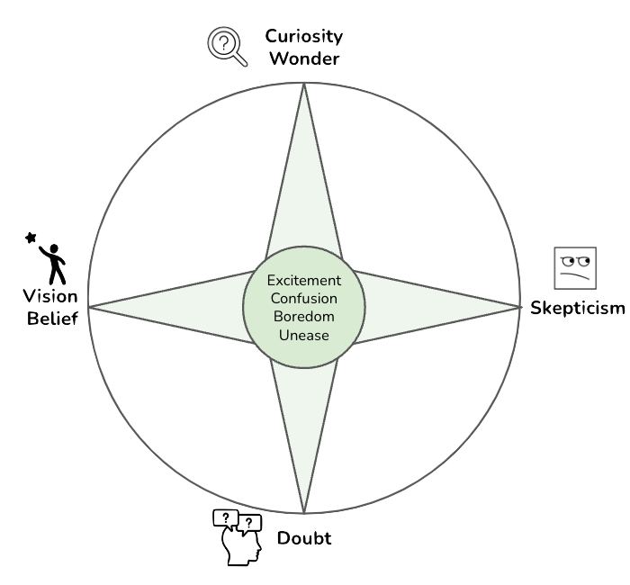
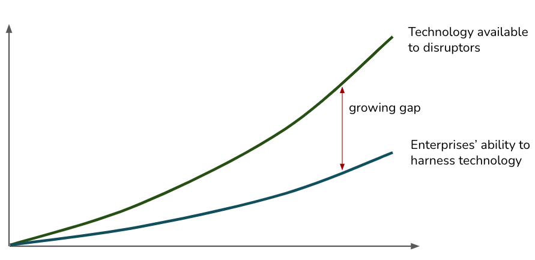

Balancing Curiosity, Doubt, Vision, and Skepticism
IN THIS SECTION, YOU WILL: Understand that balancing curiosity, doubt, vision, and skepticism is essential for driving sustainable innovation and change in organizations.
KEY POINTS:
- Curiosity and wonder spark exploration, leading to technological breakthroughs. However, without caution, it can result in premature adoption of immature solutions.
- Doubt forces a critical evaluation of progress, ensuring that innovative ideas are grounded in practical and validated approaches. Over-reliance on doubt can stifle risk-taking and hinder breakthrough innovation.
- Vision and belief provide a long-term perspective, guiding efforts toward significant, transformative goals. Yet unchecked vision can lead to confirmation bias or misdirected resources.
- Skepticism helps prevent overcommitment to unproven ideas, ensuring teams remain grounded. However, excessive skepticism can result in missed opportunities and discourage creative risk-taking.
- Architects must constantly reflect on how well they balance these forces. In doing so, they can ensure that their efforts are driven by a healthy combination of exploration, critical validation, strategic guidance, and cautious realism—all crucial to achieving lasting success in any organizational change.
IT architects must help organizations innovate and transform responsibly and sustainably. They must bring new ideas and support or voice concerns about others’ plans and proposals here. In pursuing sustainable innovation and organizational change, understanding the underlying motivators that drive individuals and teams is essential. Drawing on my previous research, I propose the metaphor of a compass to illustrate how balancing four fundamental forces—curiosity, doubt, vision, and skepticism—guides this process. Each of these motivators plays a distinct but interconnected role (Figure 1):
- Curiosity sparks exploration,
- Doubt ensures deeper scrutiny,
- Vision aligns efforts with long-term goals, and
- Skepticism questions feasibility and assumptions.
 Figure 1: The compass for driving sustainable innovation and change in organizations.
IT architects can be crucial in recognizing these different motivators and actively supporting contributions from all four. Their role is to ensure that:
- Curiosity is harnessed productively through experimentation and exploration.
- Doubt and skepticism are encouraged to critically evaluate ideas without stifling innovation.
- Vision aligns the work with strategic priorities, ensuring that technical innovations contribute to broader organizational goals.
The question for organizations and IT architects is not about choosing one direction (whether curiosity, vision, etc.) but about finding the delicate balance between all four forces. This balance drives sustainable innovation, allowing for creative growth tempered with critical thought and long-term planning.
By balancing these motivators, organizations can successfully navigate the complexities of innovation, ensuring that change is not only driven by bold ideas but also thoroughly validated, strategically aligned, and pragmatically grounded.
In the following sections, I describe these four forces in more detail.
Curiosity and Wonder
Curiosity and wonder are often the most intuitive and powerful motivators for change. Curiosity usually drives innovation—developers and engineers are drawn to explore new technologies, tools, or methods, and their natural desire to learn fuels progress. Organizations that encourage autonomy and innovation create environments where curiosity thrives.
Architects too frequently become less curious and focus on reviewing and criticizing other ideas. However, I see them as critical drivers for the responsible exploration of new technologies. Architects have a background knowledge that enables them to quickly understand the pros and cons of new directions. As per ThoughWorks analysis, there is a massive gap between the exponential growth of technology and organizations’ ability to harness it, and this gap will only increase with time. Staying curious and being able to follow new technology developments is a crucial competitive advantage of any organization.
 Figure 2: Over time, technology grows at an exponential rate. But businesses aren’t able to keep up fast enough. Curiosity is an important force that helps organizations adopt new technologies. Source: thoughtworks.com
However, over-reliance on curiosity can lead to a focus on novelty rather than sustainability. Rapid, uncritical adoption of new technologies may lead to naive solutions, overlooking potential risks or technical debt. There is a fine line between innovation fueled by curiosity and a risk of unsustainable growth if curiosity is not tempered with critical thinking.
Here are a few examples where curiosity and wonder have driven innovation yet also highlight the risks of uncritical adoption of new technologies:
- Microservices Architecture
- Curiosity and innovation: The shift from monolithic architectures to microservices was driven by curiosity and the need to solve scalability and flexibility issues. Developers were fascinated by decoupling services to allow for independent deployment and scaling, which led to significant innovations in cloud-native development, such as containerization and Kubernetes.
- Risk of over-reliance on novelty: However, organizations that rushed to adopt microservices without understanding the complexity of managing distributed systems faced orchestration, monitoring, and increased operational overhead issues. In some cases, the shift introduced technical debt, making systems more complex to maintain without proper tooling.
- Serverless Computing
- Curiosity and innovation: Serverless architectures emerged due to developers’ curiosity about reducing infrastructure management. The desire to focus solely on writing business logic and letting cloud providers handle scaling and infrastructure led to major efficiency gains, especially for dynamic workloads.
- Risk of uncritical adoption: On the downside, developers who rushed into serverless without considering factors like cold start delays, vendor lock-in, or limited control over execution environments ended up with architectures that were costly or hard to maintain in the long term.
- Agile Methodology
- Curiosity and innovation: Agile methodologies like Scrum and Kanban grew from a desire to overcome the rigidity of traditional waterfall project management. The idea of iterative development cycles and continuous improvement resonated with engineers who wanted more flexibility in their work.
- Risk of novelty over sustainability: Some organizations adopted Agile in name only, leading to chaotic workflows without truly understanding the principles of collaboration and continuous feedback. This has sometimes resulted in “fragile Agile” environments, where the novelty of faster iterations creates pressure without improving actual delivery outcomes.
- Blockchain in Software Development
- Curiosity and innovation: Blockchain’s promise of decentralized and immutable records intrigued many in software engineering, driving curiosity to explore use cases beyond cryptocurrency, such as secure voting systems, supply chain tracking, and data integrity.
- Risk of uncritical adoption: However, in many instances, blockchain was applied to problems that did not require such a complex solution, leading to increased costs, slower performance, and added technical debt when more straightforward databases would have sufficed.
Curiosity has driven innovation and progress in all of these examples, but unchecked enthusiasm for new technologies can lead to long-term challenges if sustainability and critical evaluation are overlooked.
Doubt
When we make some visible progress, we may ask ourselves if our results are wrong, coincidental, or a result of wishful thinking. Such questions are the beginning of doubt, one of the most important motivators behind creating robust results. Any evaluation can be viewed as an effort to reduce doubts about our findings.
Doubt is a critical motivator that drives rigorous validation and testing of new ideas. Doubt is primarily a positive force. Contrary to skepticism, doubt does not question the possibility of knowing something or the validity of pursuing some direction. When we doubt some finding, we want to set it on firmer ground and add more certainty.
In software engineering, doubt manifests in practices like code reviews, testing frameworks, and peer reviews of architectural designs. IT architects must foster a culture of constructive doubt, where teams constantly question whether their solutions are robust, scalable, and fit for purpose.
However, excessive doubt can stifle innovation. If teams focus only on incremental improvements and avoid risk, they may miss opportunities for breakthrough innovations. Balancing doubt and innovation is essential to creating sustainable, high-performing solutions.
Here are a few examples from IT architecture and software engineering where doubt drives rigorous validation, ensuring the robustness of systems while balancing innovation and risk:
- Unit Testing and Test-Driven Development (TDD)
- Doubt and validation: In software engineering, doubt about whether code functions (and will keep functioning) correctly leads to the widespread use of unit testing and Test-Driven Development (TDD). Engineers write tests to ensure that each piece behaves as expected. This rigorous approach minimizes errors, reduces technical debt, and ensures robust software.
- Excessive doubt risk: However, focusing too much on testing and validation can slow development. In some cases, teams may overly rely on TDD, creating rigid tests that prevent refactoring and limit innovative solutions, stifling the exploration of new design patterns.
- Code Reviews
- Doubt and validation: Code reviews are driven by doubt that any single developer’s solution is flawless. Engineers critically examine each other’s code to identify flaws, improve code quality, and enforce consistency. This process helps reduce bugs, ensures compliance with design principles, and fosters knowledge sharing.
- Excessive doubt risk: If the review process becomes overly critical, it can lead to delays, a decrease in team morale, and resistance to experimenting with novel approaches. An overly cautious environment may discourage developers from innovating.
- Continuous Integration/Continuous Deployment (CI/CD) Pipelines
- Doubt and validation: CI/CD pipelines are rooted in doubt about whether the software will behave correctly in different environments. Automated tests, builds, and deployments are triggered to ensure that changes don’t break functionality, and every small change is validated before release. This approach minimizes errors and makes systems more robust.
- Excessive doubt risk: An over-reliance on automation can sometimes create rigid workflows. Teams may hesitate to make significant architectural changes or take on ambitious projects, fearing that the automated checks will flag too many issues or create bottlenecks.
- Architectural Peer Reviews
- Doubt and validation: In IT architecture, peer reviews of system designs are based on the doubt that a single architect’s vision is complete. These reviews focus on scalability, security, and maintainability, ensuring that systems are designed to meet long-term goals and handle future demands.
- Excessive doubt risk: Excessive critique in these reviews can lead to overly conservative decisions. Architects may avoid riskier, innovative technologies that could offer better performance or scalability out of fear that they introduce too much uncertainty or complexity.
- Security Testing (Penetration Testing and Threat Modeling)
- Doubt and validation: Security is an area where doubt is especially critical. Practices like penetration testing and threat modeling are based on the assumption that systems are vulnerable. Engineers actively seek out system weaknesses to minimize risks and improve overall security posture.
- Excessive doubt risk: If security concerns are over-prioritized, they can block new features, slow development, and create a climate where innovation is too risky. This balance is particularly tricky in industries like fintech and healthcare, where innovation and security must coexist.
In all these cases, doubt catalyzes the creation of robust, validated solutions. Yet, fostering a balance between doubt and innovation is essential to ensure teams don’t shy away from bold new ideas.
Vision and Belief
While the term belief may have a negative connotation, it is difficult to imagine any transformation activity without some form of belief or guiding vision. Vision and belief are long-term strategic motivators that guide large-scale change initiatives. Successful IT architecture often begins with a bold vision—such as a belief in the transformative potential of a new technology.
However, vision without critical evaluation can lead to confirmation bias. Architects must balance visionary thinking with the rigor of curiosity and doubt to avoid pursuing misguided or overly narrow goals.
Vision and belief are much more complex motivators than curiosity and wonder. When driven by curiosity, we follow interests and the desire to learn something new. Vision and belief, on the other hand, require a longer-term commitment to some idea and constant effort to focus and organize our activities. While curiosity and wonder encourage exploration, vision and belief guide and sustain efforts toward transformative outcomes.
Here are some examples where vision and belief played critical roles in driving large-scale change initiatives and transformative innovations:
- The Internet
- Vision and belief: Early pioneers like Vannevar Bush and J.C.R. Licklider believed in a global network connecting people, information, and machines. Their vision of an “Intergalactic Computer Network” became the foundation of the modern internet. Licklider’s belief in the collaborative potential of interconnected computers drove funding and research, eventually leading to the ARPANET, the precursor to today’s internet.
- Balancing with critical evaluation: Licklider’s vision was tempered by ongoing research and testing to solve problems like network protocols, security, and scalability. Engineers balanced this visionary belief with the practical work of building resilient, fault-tolerant systems.
- Agile Development
- Vision and belief: The Agile Manifesto was born from the belief that traditional waterfall software development was too rigid and inefficient. Visionary software engineers believed in a more collaborative, iterative approach that would allow for faster delivery, continuous feedback, and greater adaptability. This belief led to the widespread adoption of Agile methodologies, revolutionizing how software is developed and deployed.
- Balancing with critical evaluation: While Agile was visionary, its success depended on carefully testing its principles in real-world projects. Teams needed to critically evaluate which Agile practices worked best for them. Excessive belief in Agile without adaptation has sometimes led to failed implementations, as teams focused too much on process over outcomes.
- DevOps Movement
- Vision and belief: The DevOps movement was driven by a belief in the transformative potential of breaking down silos between development and operations teams. Early DevOps pioneers believed collaboration, automation, and continuous delivery could improve software quality and speed dramatically. This vision transformed how organizations manage software lifecycles, driving innovation in automation tools like Jenkins, Docker, and Kubernetes.
- Balancing with critical evaluation: While DevOps was visionary, teams had to critically evaluate its feasibility in different contexts. Not every company could seamlessly adopt a DevOps culture, and early adopters had to address the challenges of tooling, integration, and operational complexity to ensure long-term success.
- Artificial Intelligence (AI) and Machine Learning (ML)
- Vision and belief: Visionaries like Alan Turing and, later, engineers at companies like Microsoft and Google believed in the transformative potential of AI and machine learning. Their belief in creating machines that could learn and think has led to breakthroughs like natural language processing, autonomous systems, and AI-driven decision-making. This vision continues to push the boundaries of computing and software engineering.
- Balancing with critical evaluation: The AI and ML fields are filled with successes and failures. While belief in AI’s potential is substantial, developing robust AI systems requires extensive testing, validation, and doubt about these technologies’ reliability, ethics, and real-world application. Without a balance of critical evaluation, belief in AI’s potential could lead to inflated expectations and misuse.
In all these examples, vision and belief served as powerful, long-term forces that propelled transformative technological changes. However, these bold ideas were successful because they were accompanied by curiosity, rigorous doubt, and constant critical evaluation to ensure their feasibility and sustainability in the real world. These revolutionary ideas might have failed to materialize without balancing belief with practical testing and adaptation.
Skepticism
Skepticism is a loaded term with several definitions. Closest to the meaning I use here is the Wikipedia definition of skepticism as “doubt regarding claims that are taken for granted elsewhere”. Similarly, I view skepticism as a reality checker that questions the fundamental premises we usually take as a given. As such, skepticism can call attention to the viability, feasibility, or practicality of a direction or approach. Contrary to doubt, which can motivate us to investigate some topic further to obtain more certainty, skepticism may call us to abandon some lines of inquiry and consider alternatives.
Fred Brooks’s paper “No Silver Bullet—Essence and Accidents of Software Engineering” is probably one of the best examples of helpful skeptical thought in software engineering. Brooks expressed his skepticism toward approaches to software engineering research that aim to discover a single solution that can improve software productivity by an order of magnitude. Brooks seriously questioned the possibility of ever finding such “startling breakthroughs,” arguing that such solutions may be inconsistent with the nature of software. Brooks also made clear that his skepticism is not pessimism. While Brooks questioned the possibility of finding a single startling breakthrough that would improve software productivity by an order of magnitude, he believed that such improvement can be achieved through disciplined, consistent effort to develop, propagate, and exploit a number of smaller, more modest innovations.
Skepticism plays a crucial role in keeping organizations grounded. In IT architecture, skepticism questions whether specific approaches or technologies are viable. Skeptical thinking can help prevent costly mistakes by challenging assumptions and forcing teams to consider alternative approaches. This type of critical thinking is essential for ensuring that decisions are sound and that innovation is pursued responsibly.
Yet too much skepticism can lead to missed opportunities. Overly critical attitudes can reject promising innovations before they’ve had a chance to prove themselves. Furthermore, if skepticism is not a well-argued result of long experience, it may trigger an emotional debate without contributing much to it. Similar to vision, practical skepticism requires deep knowledge and a fundamental understanding of the field.
Here are a few examples where skepticism has played a crucial role in questioning underlying assumptions, helping to prevent misguided decisions while still allowing space for innovation:
- Monolithic vs. Microservices Architecture
- Skepticism about microservices: While many organizations have embraced microservices as the modern solution for building scalable and flexible systems, some IT architects have expressed skepticism about whether microservices are the right solution for every use case. This skepticism arises from concerns over complexity, the operational overhead of managing numerous services, and potential performance bottlenecks.
- Impact: Skeptical architects have questioned the assumption that breaking down every application into microservices is inherently better, advocating for alternatives such as modular monolithic architectures. This skepticism has led some teams to avoid unnecessary complexity and better tailor their architectural choices to the project’s needs.
- Blockchain for Everything
- Skepticism about blockchain use cases: Blockchain technology has been widely hyped as a transformative innovation for everything from finance to supply chains to healthcare. However, skeptics have questioned whether blockchain is necessary or even practical for many of these use cases, citing concerns about performance, scalability, and the complexity of decentralized systems.
- Impact: This skepticism has led to a more nuanced and careful consideration of where blockchain is a good fit versus where traditional databases or systems are more effective. As a result, many organizations have avoided costly mistakes by not adopting blockchain for applications where it offers little to no advantage.
- Artificial Intelligence (AI) Hype
- Skepticism about AI’s current capabilities: While AI is often viewed as the future of many industries, there is considerable skepticism about its real-world capabilities, particularly in areas like fully autonomous driving, generalized AI, and complex decision-making. Skeptics question whether AI technology, as it currently stands, can live up to the hype without significant advancements in data, algorithms, and ethics.
- Impact: This skepticism has led to a more cautious and realistic approach to AI adoption. Organizations are more likely to adopt AI that can offer tangible, practical benefits (e.g., automation of routine tasks, pattern recognition) rather than diving headfirst into ambitious, underdeveloped AI projects.
- Agile Methodology Skepticism
- Skepticism about Agile’s universality: While Agile methodologies have been highly successful for many teams, some engineers and IT architects remain skeptical about its applicability in all contexts. Critics argue that Agile when applied dogmatically, can lead to chaotic environments where long-term planning and architectural considerations are neglected.
- Impact: This skepticism has encouraged organizations to adopt Agile principles to fit their needs rather than blindly adopting the methodology. Some teams blend Agile with other structured approaches to balance flexibility and long-term planning, leading to more sustainable development practices.
- Skepticism about “Serverless” Computing
- Skepticism about the limits of serverless: Serverless computing promises to abstract away the complexities of managing infrastructure, allowing developers to focus on writing code. However, skeptics point out limitations such as cold starts, vendor lock-in, and the complexity of debugging in serverless environments.
- Impact: This skepticism has led some organizations to avoid over-committing to serverless architectures for mission-critical applications. Instead, they use serverless selectively, adopting hybrid approaches that balance the benefits of serverless with the control offered by traditional infrastructure.
In these examples, skepticism has served as a valuable “reality check,” challenging assumptions that may otherwise be taken for granted. While skepticism can prevent teams from rushing into unproven technologies, it’s also essential to strike a balance—excessive skepticism can stifle innovation and prevent organizations from exploring potentially transformative ideas. Skeptics in IT architecture and software engineering remind us to be thoughtful, deliberate, and pragmatic in approaching change.
Skepticism is probably one of the most complex forces. Contrary to doubt, which can rely on several tools and methods (e.g., experiments, ethnographical methods), there are no simple and structured tools for skepticism. Practical skepticism requires careful thought, experience, and an excellent overview of the field.
Balancing Motivators in IT Architecture
The four points of the compass—curiosity, doubt, vision, and skepticism—are not mutually exclusive. Effective IT architecture teams blend these motivations into their work. For example, curiosity may drive the exploration of new technology, while doubt leads to rigorous testing, and vision provides the strategic framework for long-term development.
Balancing these motivators at an organizational level is essential for fostering a culture of innovation, resilience, and continuous improvement. Without vision and belief, there would be no forward momentum; without skepticism and doubt, there would be no accountability or critical evaluation.
To guide teams, IT architects should ask the following questions:
- Are we exploring new technologies and approaches with enough curiosity or only looking at things we already know?
- Do we have a clear long-term vision guiding our architectural decisions? Or are we blindly following industry trends, jumping from one hype to another? A well-defined vision not only steers our actions but also fuels our determination to achieve our long-term goals.
- Are we using appropriate methods to validate our solutions and address doubts?
- Are we skeptical enough of our own work, or are we being overly critical of innovative ideas?
By answering these questions, IT architects can help teams ensure they make informed, balanced decisions that sustainably drive organizational development. The goal is to create a harmonious environment where change is driven by curiosity, vision, doubt, and skepticism—leading to more sustainable and impactful outcomes.
To Probe Further
- The Four Points of the Research Compass, by Željko Obrenović, 2013
Questions to Consider
- How does curiosity drive innovation in your organization, and how do you prevent it from leading to unsustainable or risky decisions?
- In what ways can doubt contribute to the quality and robustness of your work, and how do you ensure that it doesn’t stifle innovation?
- How do you balance long-term vision and belief with the need for critical evaluation and validation in your decision-making?
- How do you cultivate constructive skepticism without allowing it to turn into cynicism that hampers creativity?
- When exploring new technologies, how do you ensure you follow industry trends and align them with a clear strategic vision?
- How can fostering a culture of curiosity, doubt, vision, and skepticism lead to more resilient and impactful solutions in your organization?
- What strategies can you use to balance risk-taking with rigorous validation in the innovation process?
- How does your organization support contributions driven by the four motivators: curiosity, doubt, vision, and skepticism?
- In what ways can skepticism be used as a tool for improvement without dismissing promising new ideas too early?
- How do you foster environments where curiosity and exploration are encouraged but tempered with thoughtful, critical evaluation?
On Human Complexity |
|||
| ← | → | ||